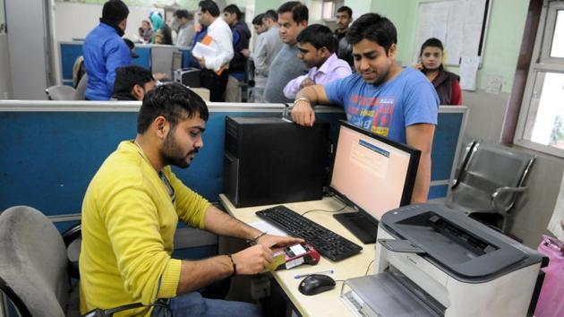
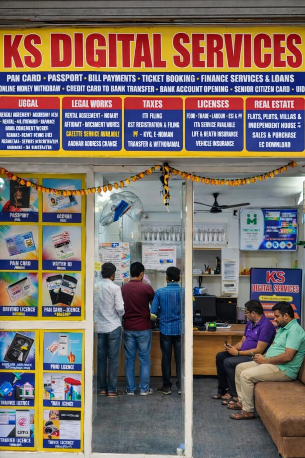

Apply • Correction • Duplicate • Delayed Registration

A birth certificate is one of the most essential legal documents issued by the government. It serves as official proof of identity, age, and place of birth. In Hyderabad and across Telangana, birth certificates are issued by GHMC (Greater Hyderabad Municipal Corporation) or local municipalities.
Many people face difficulties while applying for a birth certificate due to complex online procedures, document requirements, and verification processes. Even a small mistake in the application can result in rejection or delay.
At KS Digital Services, we provide complete assistance for birth certificate application, correction, duplicate issuance, and delayed registration. Our goal is to simplify the process and ensure your application is approved without unnecessary complications.
A birth certificate is required for multiple purposes throughout life. It acts as the foundation document for identity verification and is mandatory for various government and private services.
Without a birth certificate, many essential services become difficult or impossible to access. That is why timely registration is critical.
Complete support for registering newborn births through GHMC portal.
Name correction, date correction, and parent detail updates.
Get duplicate copy if original certificate is lost.

Step 1: Collect all required documents including hospital record and Aadhaar.
Step 2: Verify details such as name, date of birth, and address.
Step 3: Fill online application form on GHMC portal.
Step 4: Upload required documents.
Step 5: Submit application and wait for verification.
Step 6: Download certificate after approval.
All documents must be accurate. Incorrect or mismatched information can delay the process.
If a birth is not registered within the prescribed time, delayed registration is required. This process involves additional documentation such as affidavits and verification from local authorities.
Delayed registration is more complex and requires careful handling to avoid rejection.
We provide services in: Moula Ali, ECIL, AS Rao Nagar, Kapra, Uppal, Tarnaka, Habsiguda, Secunderabad and surrounding areas.
Q1: How to apply birth certificate in Hyderabad?
You can apply online through GHMC portal or visit service center.
Q2: How many days does it take?
Usually 7–15 days depending on verification.
Q3: Can I correct errors?
Yes, corrections are possible with valid documents.
Q4: Is Aadhaar required?
Yes, for verification purposes.
Q5: What if certificate is lost?
You can apply for duplicate certificate.
Q6: Can I apply after many years?
Yes, through delayed registration process.
Q7: Is it mandatory?
Yes, for most official purposes.